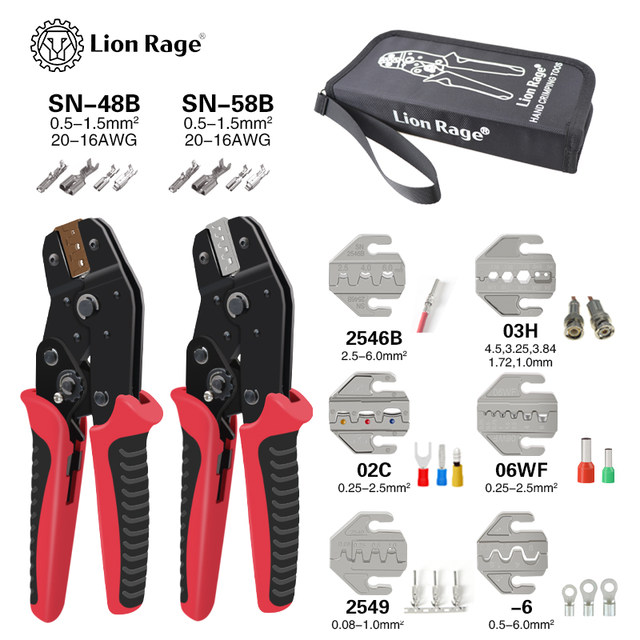
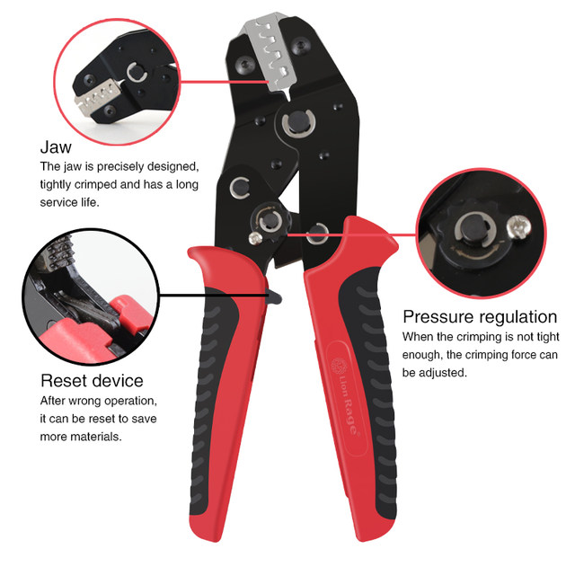
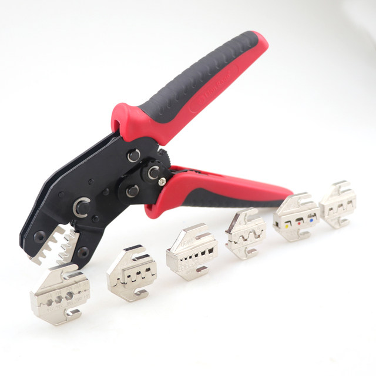
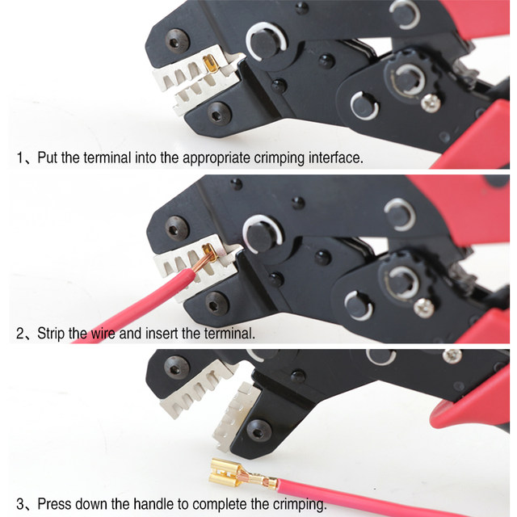
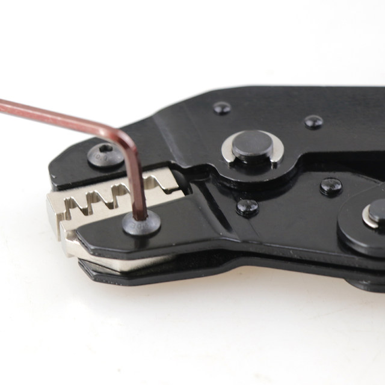
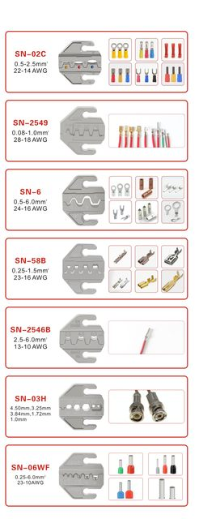

MULTIPLE COMBINATIONS OF CRIMPING PLIERS
SN-58B：0.25-1.5 24-16AWG Suitable for Plug spring terminal
SN-02C：0.25-2.5 22-14AWG Suitable for Pre insulated terminal
SN-06WF：0.25-6.0 24-10AWG Suitable for Tubular terminal
SN-2546B：2.5-6.0 22-14AWG Suitable for MC4 terminal
SN-2549：0.08-1.0 28-18AWG Suitable for Bare terminal
SN-6：0.5-6.0 24-16AWG Suitable for Bare terminal
SN-03H：1.07，1.72，1.98，3.25，4.52 Suitable for Coaxial cable





